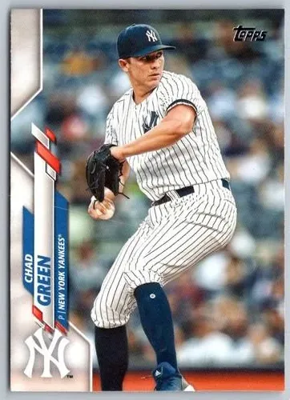

Chad Green "Greeny"
Career Highlights & Facts
(Facts are AI-generated and may require verification)
- Recorded 591 strikeouts over 492.2 innings pitched.
- Maintained a career WHIP of 1.070.
- Served as a primary relief specialist, appearing in 382 games with only 24 starts.
Would you like to find out more about Chad Green?
Player Biography
Chad Green
June 28, 2017
/
in
BioProject - Person
/
by
admin
This bio is not assigned. Want to write a SABR bio? Contact
bioproject@sabr.org
.
Full Name
Green
Born
May 24, 1991 at Greenville, SC (USA)
Tags
None
Wikipedia Summary:
Chad Green may refer to:Chad Green (outfielder), American baseball outfielder
Chad Green (pitcher), American baseball pitcher
Chad Green (politician), American politician in Virginia
Career Totals
| WAR | W | L | ERA | G | GS | SV | IP | SO | WHIP |
|---|---|---|---|---|---|---|---|---|---|
| 8.0 | 43 | 30 | 3.43 | 382 | 24 | 29 | 492.2 | 591 | 1.070 |
Statistics via Baseball-Reference.com
The Original Clue